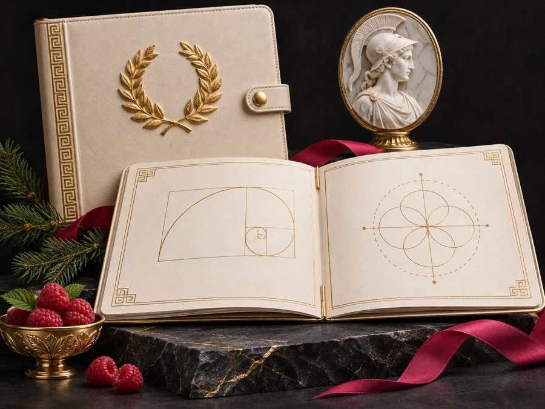
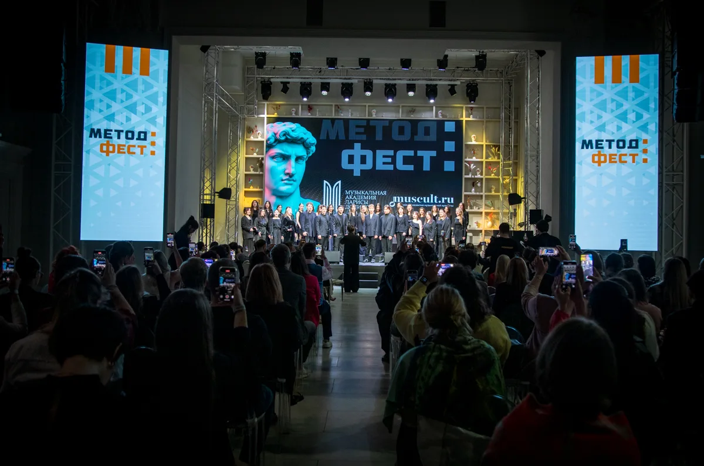
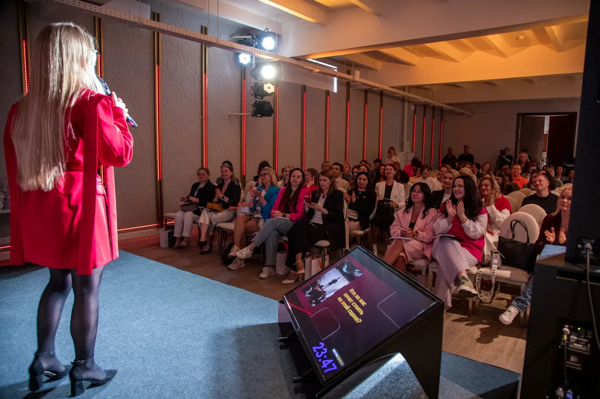
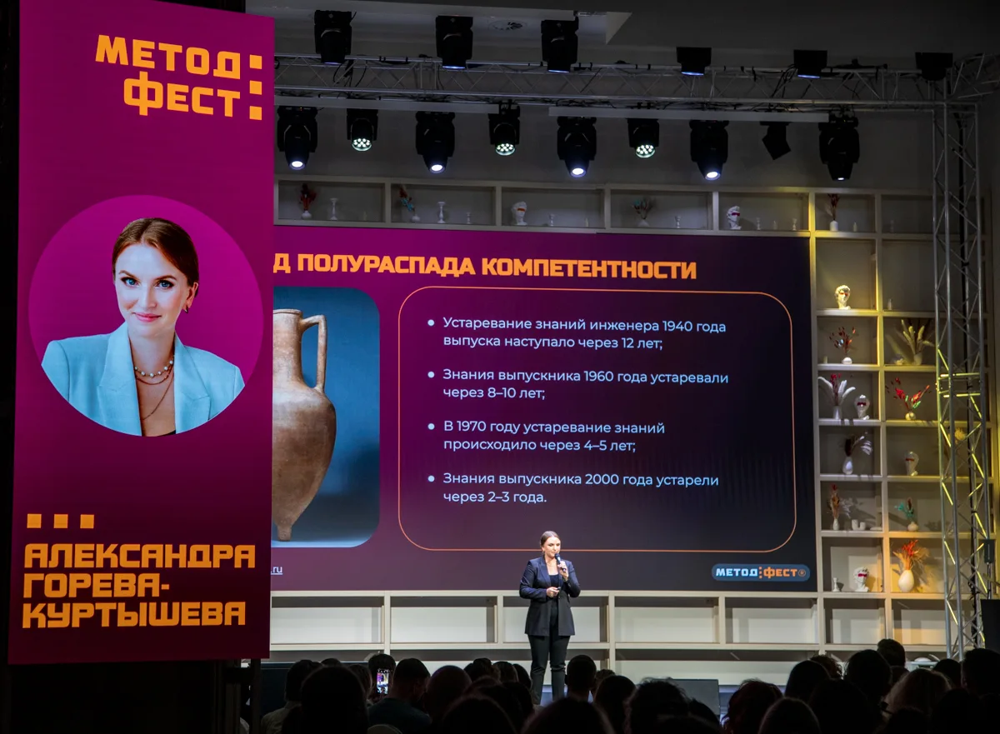
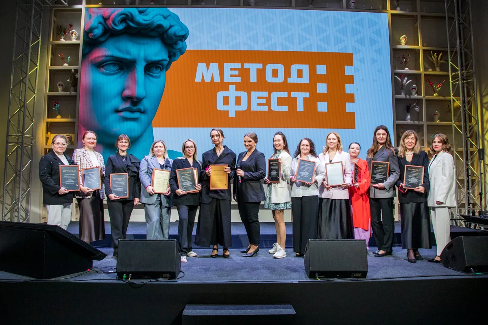
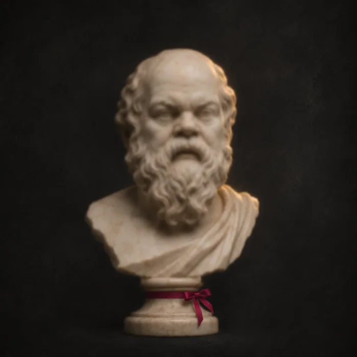
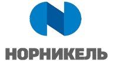
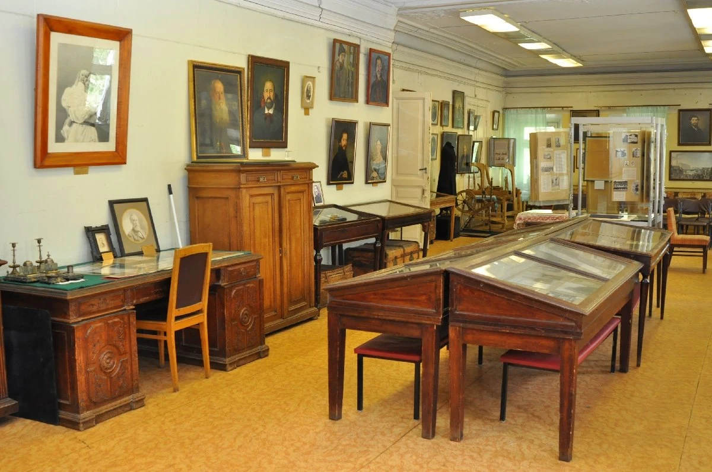
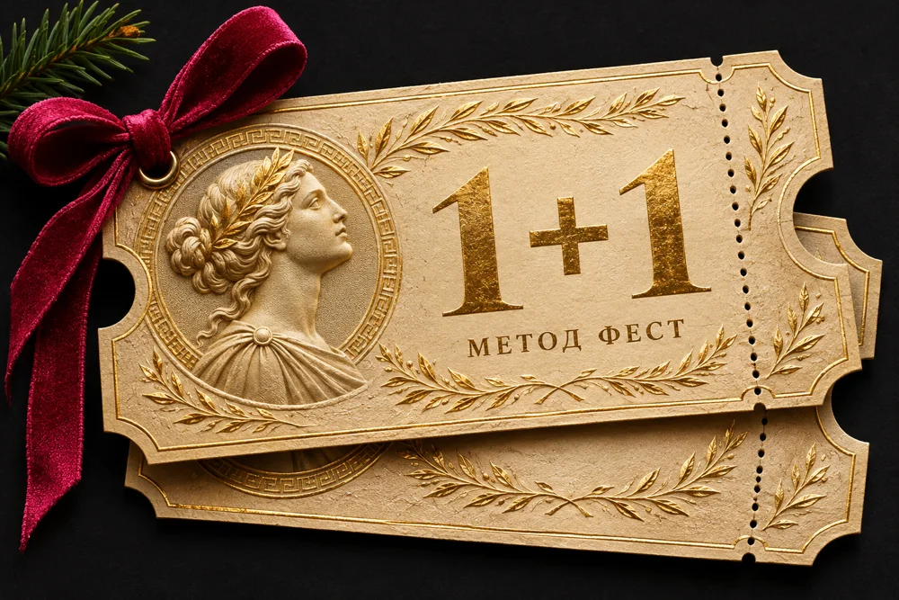

01Результат, за который вас выбирают
Продукт с понятной ценностью для клиента и конкретным результатом
19 ДЕКАБРЯ · МОСКВА · 10:00–20:00 МСК
Большой продуктовый хакатон Александры Горевой-Куртышевой
Упакуйте свою экспертизу в продукт, который станет основой вашего профессионального и бизнес-роста.
Один день для сильного продуктового решения
Опыт и идеи ведущих экспертов и компаний
Новые знакомства, партнёрства и возможности
ВАШ РЕЗУЛЬТАТ ДНЯ
Не обязательно создавать десятки программ, чтобы расти. Иногда достаточно одного сильного продукта, вокруг которого выстраиваются результаты, репутация и новые клиенты.

01Продукт с понятной ценностью для клиента и конкретным результатом
Продукт для устойчивых продаж и развития бизнеса
Продукт, с которым вас узнают, рекомендуют и приглашают к сотрудничеству
Есть встречи, после которых иначе смотришь на свои планы. Потому что рядом оказываются люди, которые мыслят масштабнее, задают точные вопросы и вдохновляют на решения.

Большое профессиональное событие с живой энергией зала

Эксперты, предприниматели, HR, спикеры и менторы

Идеи, которые превращаются в конкретные продуктовые решения

Истории достижений, награды и яркие моменты
ВАШ ОПЫТ — ТОЧКА ОТСЧЁТА
Найдите основу для нового направления или усиления существующего бизнеса
Создайте концепцию образовательного продукта, ориентированного на задачи компании
Превратите экспертизу в продукт, который можно развивать за пределами индивидуальной работы
Превратите профессиональный опыт в продукт для новых аудиторий и партнёрств
Лидеры мнений рядом: после каждого выступления вы сможете познакомиться со спикером и задать вопрос напрямую.
Что вас ждёт
Первые знакомства и общение в атмосфере Метод Феста
Выступления Александры и приглашённых спикеров о продуктах, развитии компаний и личном опыте
Разработка концепции собственного продукта-генератора
Истории достижений, награждение участников
Иммерсивное шоу и праздничная атмосфера
Время проведения: 10:00–20:00 мск · Детальное расписание находится на согласовании
Дресс-код: Smart casual (элегантный повседневный стиль)
Идеи от тех, кто создаёт продукты, развивает компании и работает с масштабными задачами.
EdTech-предприниматель, методолог-практик, автор и ведущая хакатона
Спикер на утверждении

На согласовании

18 ДЕКАБРЯ · СПЕЦИАЛЬНАЯ ПРОГРАММА ДЛЯ УЧАСТНИКОВ ТАРИФА «СОЗДАТЕЛЬ»
Бизнес-экскурсии к лидерам отрасли
ТОЛЬКО ПЕРВЫМ 30 ПОКУПАТЕЛЯМ ТАРИФА «СОЗДАТЕЛЬ»
Как Splat стал лидером рынка: продуктовые решения, которые вывели компанию вперёд, из первых рук.

18 ДЕКАБРЯ ПОСЛЕ ОБЕДА
Экскурсия в Музей предпринимательства для участников тарифа «Создатель».
Участие музея в программе уточняется
офлайн или онлайн
Участие в главном событии 19 декабря.
офлайн или онлайн
Больше встреч, подарков и персонального внимания.
Специальный бонус для первых покупателей
Первым 30: бизнес-экскурсия в компанию Splat 18 декабря

ТОЛЬКО ДО 22 НОЯБРЯ
Пригласите партнёра, возьмите с собой коллегу или подарите билет близкому человеку.
При покупке билета «Создатель» второй билет того же тарифа вы получаете в подарок.
Забрать два билетаСлужба заботы поможет с выбором и оплатой.
В Москве. Адрес площадки сообщим в личные сообщения и продублируем на электронную почту.
Да. Концепцию продукта-генератора вы разработаете на основе своей экспертизы и опыта.
Да. Метод Фест подходит руководителям, HR и руководителям обучения, которые создают образовательные продукты внутри компании.
Smart casual (элегантный повседневный стиль).
Да. Напишите менеджеру, он поможет доплатить разницу.
Да. Напишите менеджеру, он подготовит договор и счёт.
Да, можно. Напишите менеджеру, он поможет с оплатой.
Да. Программу можно смотреть онлайн, и вы получите те подарки своего тарифа, которые доступны в онлайн-формате.
Записи выступлений получат участники тарифа «Создатель», доступ на год. Хакатон проходит без записи: это живая работа участников.
19 ДЕКАБРЯ · МОСКВА
Один день может стать началом большого профессионального изменения.
Создайте основу своего следующего продукта. Встретьте людей, с которыми захочется двигаться дальше. Станьте частью Метод Феста.
Только до 22 ноября второй билет в подарок ·
Забронировать место